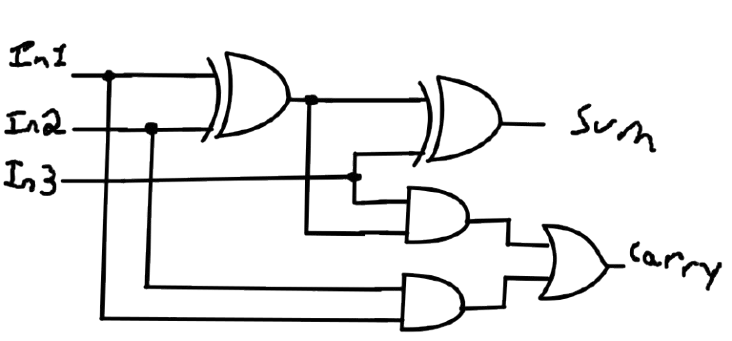

Abstraction
Abstraction is the concept of removing detail and generalizing functionality
Abstraction is the concept of removing detail and generalizing functionality
Integrated circuits allow us to package up and abstract away individual circuits (transistors, cables, resistors, etc.). They are made using photolithography, where masks (shadows) and powerful lights etch/burn a circuit patern into chips.
And takes 2 inputs. If one or more inputs are 0, the output is 0. If both are 1, the output is 1.
Or takes 2 inputs. If one or more inputs are 1, the output is 1. If both are 0, the output is 0.
Not takes 1 input. If the input is 1, the ouptup is 0 and vice versa.
Nand takes 2 inputs. If both the inputs are 1, the output is 0. Otherwise, the output is 1.
Nor takes 2 inputs. If both inputs are 0, the output is 1. Otherwise, the output is 0.
Xor takes 2 inputs. If both inputs are different, so one is 1 and the other is 0, the output is 1. Otherwise, the output is 0.
Binary has 2 options for values, 0 and 1. If a current is passing through a wire, it is considered to be 1, and when there is none it is considered to be 0.
Octal has 8 options for values, 0 to 7. It is the least used system out of the 4.
Decimal has 10 options for values, 0 to 9. It is the most used system in math, and most other places.
Hexadecimal has 16 options for values, 0 to 9 and a to f. It is used in many places, but is most well known for hex codes for colours.
Since binary is base 2, converting everything to binary before going to the desired system is often easier. As such, this section is divided into 3 sections, an octal section, a decimal section and a hexadecimal section.
Transform each octal position into its binary equivalent, making sure that each octal position turns into 3 binary digits. To go from binary to octal, take 3 binary positions, starting from the end, and turn each of those into its octal equivalent.
Using the table below, find the largest number that the decimal number fits into. Mark down a 1 in that position, and if it does not fit, put down a 0. Repeat until you finish the number. To go from binary to decimal, use the same table and add up all the positions that have a 1's values to get the number.
Transform each hexadecimal position into its binary equivalent, making sure that each octal position turns into 4 binary digits. To go from binary to hexadecimal, take 3 binary positions, starting from the end, and turn each of those into its hexadecimal equivalent.
The half adder takes 2 inputs. It gives 2 outputs. See half adder diagram below.
The full adder takes 3 inputs. It gives 2 outputs. See full adder diagram below.
